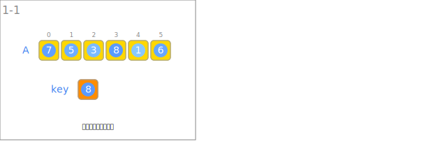
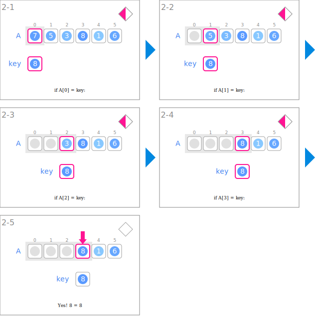

符号
| 数据 | ||
|---|---|---|
 |
作为搜索对象的整数列 | A |
 |
目标值 | key |
| 输入 | ||
|---|---|---|
 |
读取作为搜索对象的整数列 | |
 |
读取目标值 | |
| 搜索 | ||
 |
比较是否与目标值相等 | if A[i] = key: |
 |
指向与目标值相等的第一个元素的位置 | i |
 |
扩展已搜索的元素区间 | 区间[0, i] |
动画
输入

搜索
